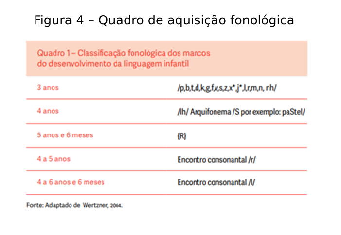
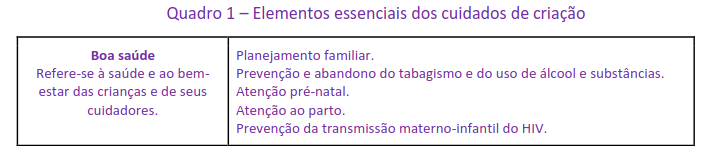
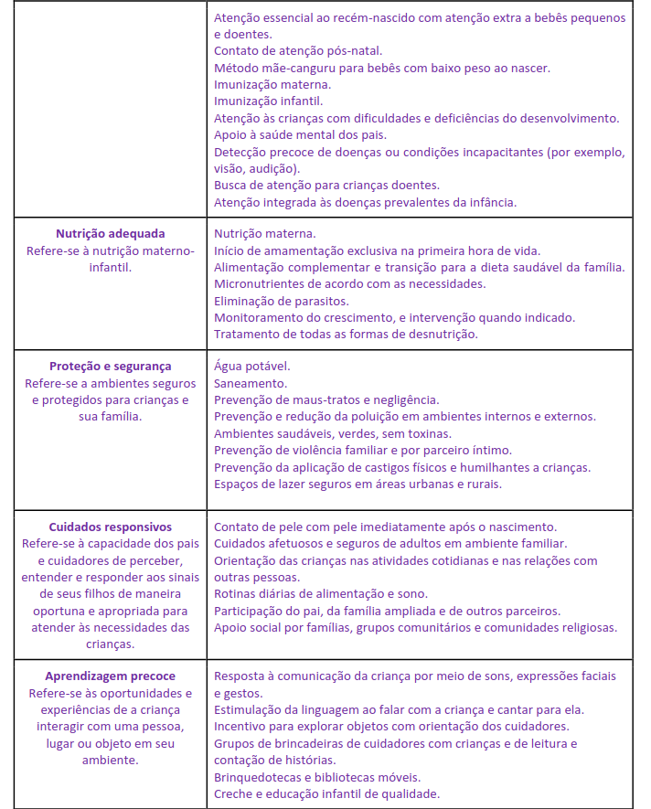

Sumário
Titulo principal
Nesta unidade...
A importância da comunicação
A aquisição da linguagem depende de um aparato neurobiológico e social, com o pleno desenvolvimento das estruturas cerebrais, de um parto sem intercorrências e da interação social desde sua concepção (Zorzi, 2008; Brasil, 2023). Nesse contexto, a criança passa por etapas preparatórias no desenvolvimento da linguagem.
A comunicação não consiste apenas na comunicação e transmissão de ideias pelas palavras, envolve gestos (comunicação não verbal), sentidos, ações, movimentos que expressam emoções sociais e experiências da criança com as coisas e as pessoas, que são cruciais no desenvolvimento cognitivo (Brasil, 2023). Para que ocorra de forma plena, os pais, os cuidadores e os que a cercam servem como mediadores entre a criança e o mundo (Papalia; Olds, 2000; Brasil, 2023)
Quando um bebê ou uma criança apresenta certos sinais que sugerem dificuldades na comunicação oral, é preciso iniciar imediatamente a estimulação adequada. Por exemplo, se houver dificuldade na emissão de sons (sistema fonológico), é necessário observar se essas trocas estão dentro do que é esperado para a idade ou não, conforme o você pode conferir a seguir na imagem.
Ao identificar dificuldades na fala da criança, como a não emissão de certos sons, trocas, etc., que não apresentam avanços com a estimulação oferecida, a criança deve ser encaminhada a profissionais especializados (neuropediatra e fonoaudiólogo) (Brasil, 2023).
Card – comunicação
A comunicação possui domínios não verbais (linguagem corporal, gestos e sinais) e verbais. A comunicação verbal ocorre nos modos oral ou escrito e possui três componentes, conforme Duryea (2022):
- Linguagem receptiva – recepção de informações sensoriais.
- Linguagem expressiva – expressão motora; envolve articulação, voz, fluência.
- Linguística – processamento do Sistema Nervoso Central (SNC) de funções sensoriais e motoras e formulação da linguagem.
A maioria das crianças progride em direção à competência linguística por meio de uma série de estágios semelhantes, apesar das diferenças nas origens culturais e linguísticas (Duryea, 2022). Além disso, você sabia que, conforme Duryea (2022), a linguagem tem quatro componentes? Veja:
- Fonológico – Sons da fala, fonemas.
- Semântica – Vocabulário, significado das palavras.
- Sintaxe – Gramática, combinando palavras em frases.
- Pragmática – Use no contexto para comunicar de forma eficaz.
Dicas importantes:
- Estabeleça e fortaleça o vínculo com a família – esta é essencial na estimulação do bebê/da criança.
- A intervenção precoce é o caminho para desenvolver habilidades e prevenir agravos do desenvolvimento.
- Utilize atividades lúdicas a fim de desenvolver habilidades e interesses do bebê/criança.
- Essas são essenciais em casos de atrasos ou transtornos do desenvolvimento. Lembre-se de que bebês/crianças com atraso ou com algum transtorno do desenvolvimento possuem um grande potencial a ser desenvolvido (Brasil, 2023, p. 23).
- Conheça e respeite o ritmo de cada bebê/criança.
- Utilize o brincar e as brincadeiras como ferramenta de aprendizado.
Brasil (2023, p. 24) traz as contribuições de Rezende (2008) sobre a importância de brincar, de a criança ser criança, quando este afirma que: “a brincadeira oferece às crianças uma gama de possibilidades no domínio cognitivo: permite a tomada de consciência na esfera da imaginação, na formação das motivações intrínsecas, na idealização, no planejamento motor e na possibilidade de interação com o outro”.
Você utiliza e orienta o brincar como ferramenta para estimular o desenvolvimento?
O Modelo do Cuidado Integral (Nurturing Care Framework) e as necessidades básicas da criança
Você já ouviu falar sobre o Modelo de Cuidado Integral (Nurturing Care Framework)? Confirauma definição sobre o tema: “O modelo do Nurturing Care, em português pode ser traduzidocomo Atenção e Cuidado Integral, apoia a compreensão das ações necessárias para a promoçãodo desenvolvimento integral em todas as fases da infância, principalmente na primeira infância”(Altafim et al., 2023, p. 6).
O Nurturing Care Framework, ou Modelo de Cuidado Integral (WHO, 2018), é um plano decuidado e um roteiro de ação sobre o processo de desenvolvimento infantil e as intervençõesefetivas para promover o desenvolvimento na primeira infância. Ele indica como pais ecuidadores podem ser apoiados na criação de crianças pequenas. Reconhece a importânciacrucial de um ambiente favorável, e a função de vários setores para proteger, promover e apoiaro desenvolvimento durante toda a vida.
O plano concentra-se nos primeiros anos de vida e expressa a importância crucial dos milprimeiros dias, desde a concepção até o final do segundo ano de vida, quando o cérebro sedesenvolve em uma velocidade surpreendente e é mais sensível a danos, bem como aintervenções, para mitigar os riscos e otimizar o desenvolvimento. Descreve “políticas e serviços,além das funções de diversos setores, sobretudo do setor da saúde, que tem alcanceincomparável e função especialmente importante no apoio aos cuidadores para criar os alicercesdos cuidados de criação” (WHO, 2018, p. 4).
Card cuidados de criação
Os “cuidados de criação” referem-se a um ambiente estável, criado por pais e outros cuidadores, que assegura a boa saúde e nutrição das crianças, protegendo-as de ameaças, e oferece oportunidades de aprendizagem precoce, por meio de interações responsivas e de apoio emocional (WHO, 2018, p. 3).
Entende-se por domínios dos cuidados de criação os cinco componentes inter-relacionados aos cuidados de criação:
- boa saúde,
- nutrição adequada,
- proteção e segurança,
- aprendizagem desde o início da vida precoce, e
- cuidados responsivos.
As crianças necessitam dos cinco domínios para aproveitar todo o seu potencial dedesenvolvimento.
Os cinco componentes do Modelo de Cuidado Integral (Nurturing Care Framework)
Agora vamos aprofundar conhecimentos sobre os elementos essenciais dos cuidados de criação.
 Portanto, você pode contribuir para o cuidado das crianças relembrando e orientando a colocar em prática os cinco domínios do Modelo de Cuidado Integral, desenvolvendo estratégias em parceria com a família.
Para complementar seus conhecimentos, acesse os links:
- “Cuidados de criação para o desenvolvimento na primeira infância - Plano global para ação e resultados”, disponível em: nurturing-care-framework-first-consultation-pt.pdf (fiocruz.br)
Ao acessar o Modelo de Cuidado Integral percebe-se que apoiar as famílias e proporcionar estratégias acolhedoras alicerçadas nas políticas e em programas de atenção como:
- apoio à renda,
- bem-estar social,
- transferências de renda,
- licença remunerada para os pais,
- atenção universal à saúde,
- Código Internacional de Comercialização de Substitutos do Leite Materno (NBCAL),
- legislação trabalhista e orientação correspondente,
- Iniciativa Hospital Amigo da Criança (IHAC),
- Estratégia Amamenta e Alimenta Brasil (EAAB),
- Método Canguru,
- Bancos de Leite Humano,
- Salas de Apoio à Amamentação,
- Agosto Dourado (instituído pela Lei Federal nº 13.345 de 12 de abril de 2017),
- registro de nascimento,
- serviços de atenção infantil acessíveis,
- acesso universal à pré-escola e à educação primária,
- Programa Nacional de Imunização (PNI),
- Política de Atenção Integral à Saúde da Criança (PNAISC),
- dentre outras ações e estratégias que tenham como meta garantir o atendimento das necessidades básicas da criança podem contribuir para um desenvolvimento saudável.
Quais ações você e sua equipe têm desenvolvido e que contemplam alguns dos cinco componentes do Modelo de Cuidado Integral?
A Intervenção Precoce (IP) e a janela de oportunidades para o desenvolvimento neuropsicomotor
Conceito e significado da intervenção precoce
O termo Intervenção Precoce (IP) engloba um conjunto de intervenções direcionadas diretamente à criança, abrange ações direcionadas à família e ao contexto, em busca de melhores respostas da criança em relação às necessidades que ela apresenta, sejam elas transitórias ou permanentes (Franco, 2007).
A IP tem como objetivo promover o desenvolvimento integral da criança, reconhecendo a importância dos vínculos afetivos sólidos e da personalidade segura, e também pode ser entendida como: estimulação essencial, educação precoce, atenção precoce e oportuna e intervenção essencial (Brasil, 2023).
Card IP
A IP está embasada teoricamente sobre as neurociências, a investigação sobre desenvolvimento das crianças e as perspectivas contextuais e ecológicas do desenvolvimento e em uma atuação multidisciplinar (Franco, 2007).
Considerações importantes sobre a IP (Franco, 2007, p. 116):
- obedece ao princípio da oportunidade - deve ocorrer no tempo certo. Quer seja antes doproblema (perspectiva de prevenção) quer seja logo que possível (problema da detecçãoprecoce), mas sempre de imediato.
- Os objetivos da IP são: criar as condições mais facilitadoras do bom desenvolvimento e que permitam eliminar ou diminuir o risco; facilitar a integração da criança no meio familiar, escolar e social e a sua autonomia pessoal, através de uma redução dos efeitos de uma deficiência ou déficit; reforçar as boas relações e competências familiares através da promoção de uma boa base emocional de suporte; e introduzir mecanismos de compensação e de eliminação de barreiras. Tudo isto considerando sempre a criança como sujeito ativo no processo, envolvendo a comunidade na integração e fomentando redes de suporte emocional à criança e à família.
- A IP é organizada em diferentes fases: a fase de detecção consiste no procurar, em toda a população, de forma sistemática, os indicadores para futuras medidas individualizadas. A fase de identificação ou sinalização, em que se procuram os sinais ou sintomas que sugerem que o desenvolvimento da criança pode estar em risco ou a progredir de forma atípica. Esta é uma dimensão preventiva fundamental porque para se intervir precocemente há que identificar e orientar precocemente. As fases de avaliação, diagnóstico e planejamento da intervenção visam caracterizar a natureza da problemática em causa, as necessidades que daí decorrem, e planejar o bom uso dos recursos disponíveis. Por fim, a intervenção inclui todas as atividades dirigidas à criança, à sua família e ao ambiente, com o objetivo de criar condições favoráveis ao seu desenvolvimento. Essas intervenções devem considerar sempre a globalidade da criança,sendo planificadas e implementadas por uma equipe de diferentes profissionais, numa orientação interdisciplinar ou transdisciplinar (Shonkoff; Meisels, 2000).
Portanto, a IP contribui positivamente para o rearranjo das conexões cerebrais compensando os sinais dos transtornos do desenvolvimento, diminuindo assim o prejuízo do comprometimento nas habilidades e competências do desenvolvimento (Brasil, 2023).
Diante da importância da intervenção precoce, você consegue identificar as ações que você tem desenvolvido para promover essas intervenções?
Outras dicas importantes:
- Proponha estratégias e atividades de estimulação em parceria com a família, a criança e as equipes interdisciplinares.
- Amplie a perspectiva das técnicas e atividades de estimulação, estas devem abarcar todos os domínios que possam interferir na maturação da criança, propiciando o desenvolvimento neuropsicomotor, sensorial, social e emocional.
- Elabore programas de estimulação precoce contemplando as “seis janelas de oportunidade da criança", a saber: sensório, motora, cognitiva, social, emocional e comunicacional (fala e linguagem) (Brasil, 2023, p. 29).
- É importante detectar, prevenir e estimular, de forma dinâmica e integral, as necessidades transitórias ou permanentes da população infantil que, na primeira infância (0 a 6 anos), apresentam sinais de risco de transtornos em seu desenvolvimento (Farroni; Menon, 2014 apud Brasil, 2023, p. 29).
- Lembre-se de que crianças com risco pré-natal, perinatal e pós-natal, prematuras, devem ser encaminhadas para estimulação precoce clínica e educacional. Portanto, a avaliação e o mapeamento de risco e vulnerabilidade são elementos essenciais nesses encaminhamentos.